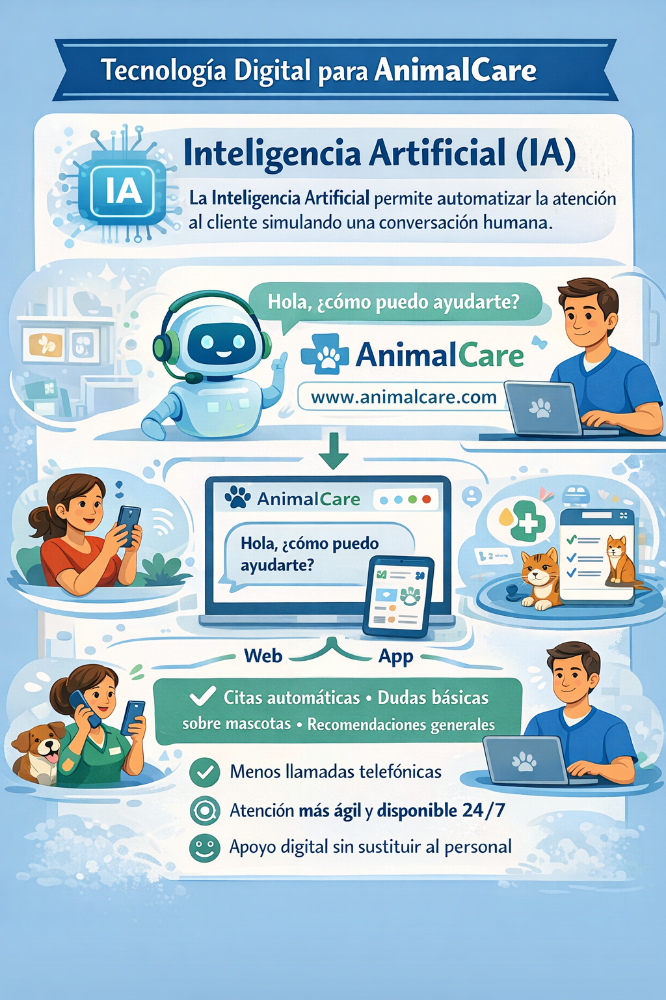

Tecnología elegida: Inteligencia Artificial (IA)
La Inteligencia Artificial permite a los sistemas analizar información y responder de forma automática simulando una conversación humana. En Animal Care, esta tecnología se aplicaría mediante un chatbot integrado en la página web o en una aplicación móvil de la empresa.
El chatbot permitiría a los clientes pedir citas de forma automática, resolver dudas básicas sobre el cuidado y la salud de sus mascotas y recibir recomendaciones generales. De este modo, se reducirían las llamadas telefónicas y se agilizaría la atención al cliente, sin sustituir al personal humano.

¿Por qué esta tecnología y no otra?
Se ha elegido la Inteligencia Artificial porque es una tecnología especialmente adecuada para automatizar procesos repetitivos y mejorar la comunicación con el cliente. A diferencia de otras tecnologías digitales, la IA permite ofrecer respuestas inmediatas y personalizadas, adaptándose a las necesidades de cada usuario.